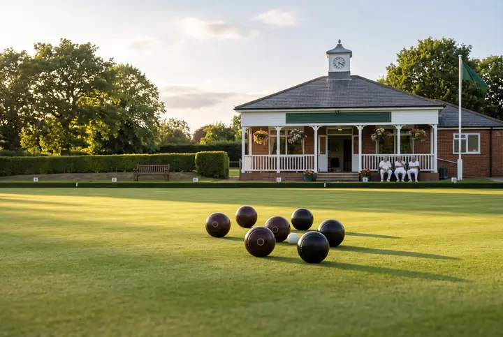

Welcome to Bias
Step onto the green. Play online, against the computer or in a quick practice session.
Free, no adsPrivacy© 2026 Bias
Bias is the curve a bowl takes as it slows down: one side of the bowl is shaped differently from the other, so it runs nearly straight while it is quick and curls in near the end. Bias strength sets how far it curves; late swing sets how late in its run the curve comes.
Illustrative gameplay profiles, named after familiar bowls. They are not manufacturer specifications and do not reproduce any commercial bowl's exact behaviour.
Open this again any time from the ? button.